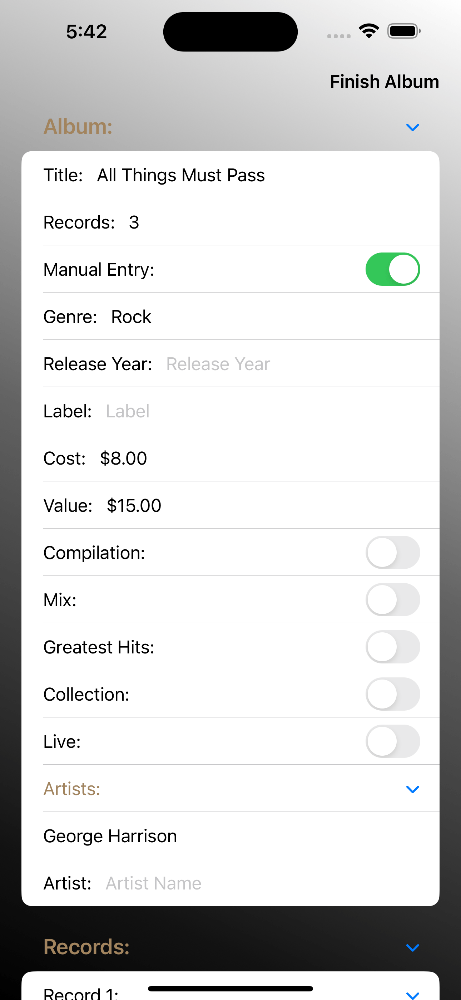
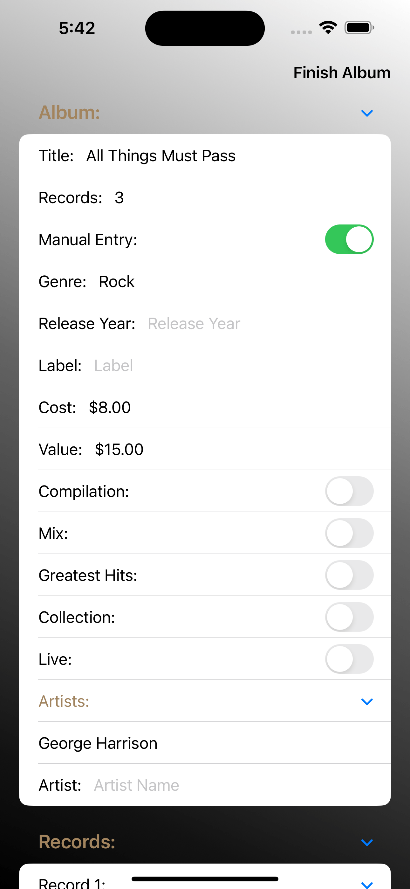

Description:
This is an iOS app I developed this summer to get experience developing a complete product for a mobile device.
This project makes use of CoreData, which uses a native iOS database to store User Data persistantly between sessions.


The main idea is to keep track of the details of each record you buy, as well as other data about the trip and stores you bought from.
 

You can enter as much or as little data about each record as you want, letting you focus on the aspects you really care about.


This extends to being able to control the details of every track on a record, or letting the app fill in data automatically for you.
In the end, you trip details are saved on your phone, and statistics about your trips, each store, and your overall collection are maintained and updated